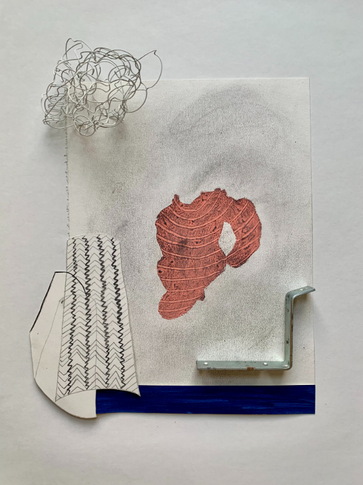

Emily Lindskoog: Sediment
Emily Lindskoog: Sediment
Exhibition Dates: January 10 – February 21, 2026
Opening Reception: Saturday, January 10, 1–4 PM
Tiger Strikes Asteroid Chicago is pleased to present the solo exhibition, Emily Lindskoog: Sediment. Lindskoog’s drawings function as meeting grounds—surfaces where disparate histories converge and unexpected correspondences emerge. Working toward the formal qualities that bind seemingly unrelated things, Lindskoog traces connections between objects and gestures, allowing echoes and rhymes to accumulate on the page. Her drawings are repositories of time—stratified surfaces where observation accumulates like geological deposits. Working through repetition and variation, she builds compositions that function both as singular encounters and as components within a larger syntax, each piece holding its own integrity while contributing to an evolving vocabulary of form. They reveal how everything known is constantly, inevitably rearranging into something else.
The works invite a double vision: what registers initially as spare and immediate reveals itself, on sustained attention, to be constructed from multiple accretions. Edges disclose layers, marks pile upon marks, and the act of looking becomes archaeological. These are not transparent windows but dense sites where material and gesture compress histories of making into concentrated forms. Like samples collected from a field, each drawing bears witness to specific durations.
Lindskoog’s process operates instinctively within self-imposed structures. Through seriality and the deliberate limitation of means, she creates conditions for discovery rather than predetermined outcomes. The drawings exist in provisional states, their arrangements suggesting acts of framing that remain open to reconfiguration. They are entangled with the circumstances of their viewing, reflecting on how context shapes visibility and meaning.What emerges is an investigation into how perception weaves connections across differences. Lindskoog finds correspondences between the arc of a gesture and the edge of an object, between the rhythm of repetition and the particularity of a single mark. The drawings quietly pose questions about position and relation: Are we the center from which meaning radiates outward, or are we nodes within a larger network of interdependence? Do we observe the world as separate subjects, or are we already implicated in the patterns we trace?Her work proposes that significance resides in proximity—in the careful attention to what is near at hand—and that through sustained looking, the familiar becomes strange again, animated by relationships we had not yet learned to see. In mapping these connections, Lindskoog suggests that our interconnectedness is not abstract but visible in the formal echoes that persist across scales and contexts, binding us to what we encounter and to each other. Visual resemblances become more than coincidence—they suggest an underlying grammar of form that persists across contexts and scales.
The drawings resist singular narratives, instead creating space for multiple temporalities to coexist. Past and present fold into one another as Lindskoog maps relationships between what she sees and what she remembers, what is made and what is moved.
What emerges is a practice of attention itself—one that finds significance not in isolated moments but in the patterns that connect them. Lindskoog’s drawings remind us that encounters happen not just between people but between forms, and that recognition can occur in the meeting of a gesture with its formal echo, arriving at precisely the right place in precisely the right moment.